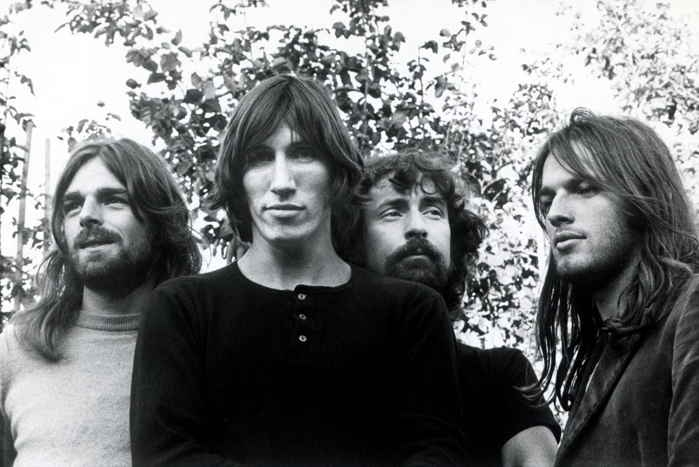
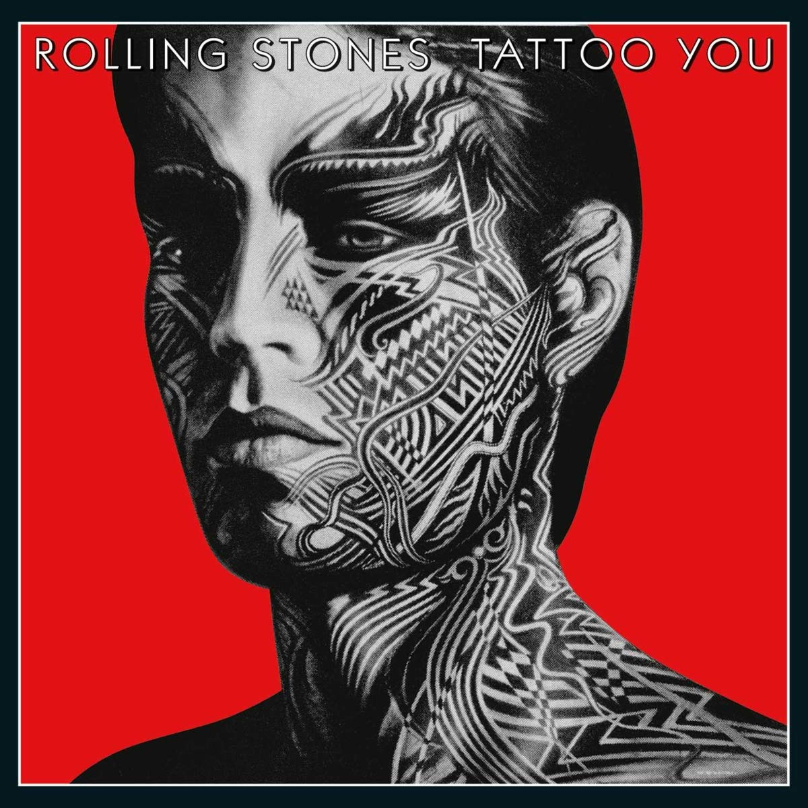
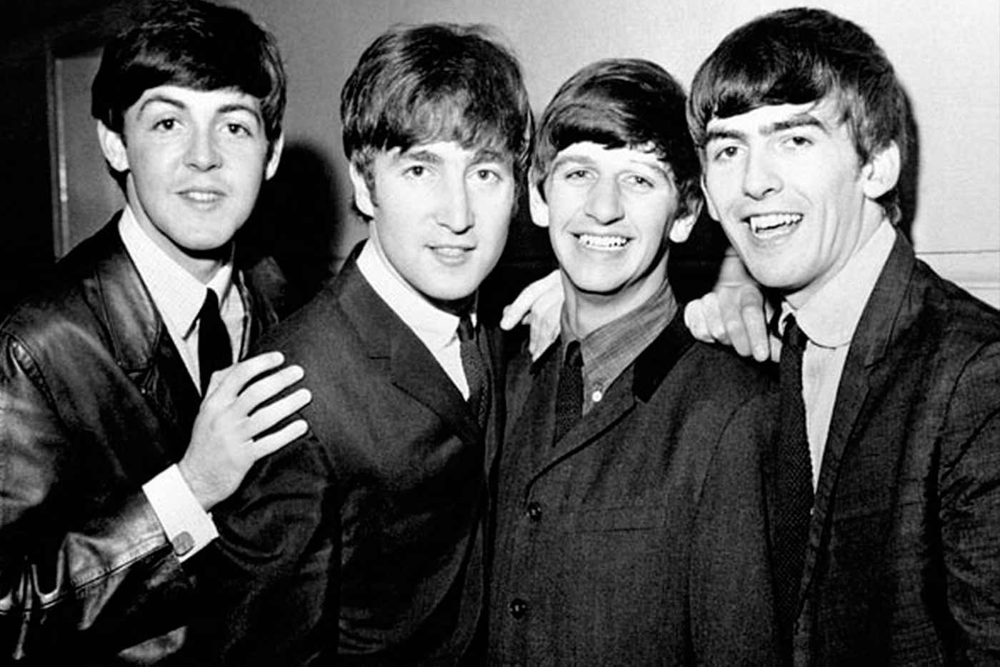

Artistas

Nombre del Artista: AC/DC
Top 5 Canciones:
1. Back in Black
2. Thunderstruck
3. You Shook Me All Night Long
4. Whole Lotta Rosie
5. Ride On

Nombre del artista: Michael Jackson
Top 5 Canciones:
1. Man in the Mirror
2. Billie Jean
3. Thriller
4. Beat It
5. Smooth Criminal

Nombre del artista: Pink Floyd
Top 5 Canciones:
1. Comfortably Numb
2. Wish You Were Here
3. Time
4. Shine On You Crazy Diamond
5. Another Brick in the Wall (Part II)
Nombre del artista: Nirvana
Top 5 Canciones:
1. Lithium
2. Smells Like Teen Spirit
3. Heart-Shaped Box
4. Come As You Are
5. Drain You

Nombre del Artista: Los Rolling Stones
Top 5 Canciones:
1. Gimme Shelter
2. Sympathy for the Devil
3. Paint It, Black
4. (I Can't Get No) Satisfaction
5. Wild Horses

Nombre del artista: Los Beatles
Top 5 Canciones:
1. A Day in the Life
2. I Want to Hold Your Hand
3. Strawberry Fields Forever
4. Yesterday
5. In My Life